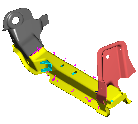

预计完成这堂课需要：11–18 分钟

用户默认设置让您可以根据您自己的实践和标准来定制焊接。
用户默认设置包括以下几个类别，您或您的公司可以定义焊接助理默认设置或首选项：
公共 — 指定颜色、默认图层、公差、引用集名称以及部件编号的默认设置。
创建 — 指定电阻焊缝焊、珠焊、缝焊、对边焊、角焊、电阻焊点焊等焊接类型的默认设置。
定制焊点 — 指定五种定制焊接类型的默认设置，以及焊接螺母和焊接螺柱的默认设置。
制图 — 制定您打算使用的标准、小数点以及弧焊网格显示
菜单
文件→实用工具→用户默认设置→焊接助理